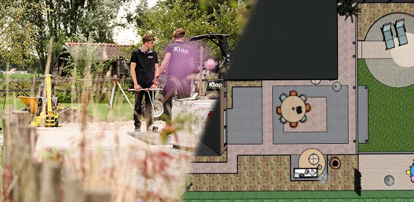
1
Ontwerp
We beginnen bij uw wensen. Met uw ideeën en onze ervaring maken we een plan voor een tuin die bij u past: een modern, strak terras, een speelse gezinstuin of een organische tuin vol beplanting.
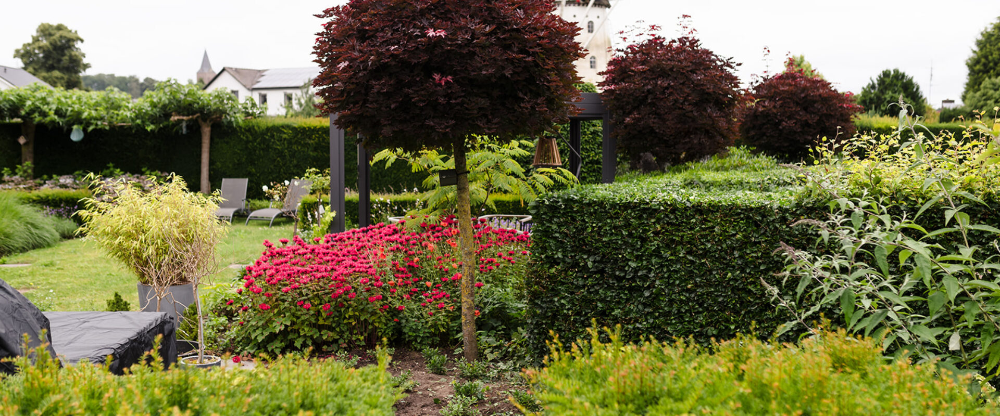
Hoveniersbedrijf Klap Tuinen uit Doetinchem ontwerpt, legt aan en onderhoudt tuinen, klein en groot. Van de eerste schets tot de voorjaarsbeurt.
4,9 uit 23 Google-reviews
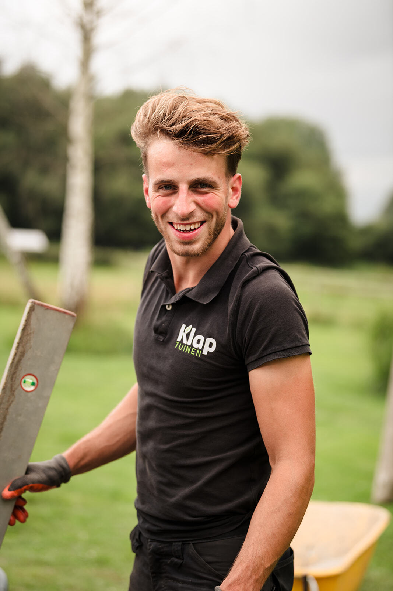
Mathijs is al van jongs af aan actief in het hoveniersvak. In 2019 zette hij de stap naar zelfstandig ondernemerschap, en zo ontstond Klap Tuinen.
Ontwerpen, aanleggen, onderhouden: wij gaan geen enkel onderdeel uit de weg. Dat maakt het werk elke keer weer uitdagend. En als we een tuin opleveren die er strak en verzorgd bij ligt, verschijnt er een glimlach op ons gezicht.
We werken met hoogwaardige producten, duurzame houtsoorten en gezonde, sterke beplanting die tegen een stootje kan. Zo ontstaat samen met u een tuin die past bij uw smaak en leefstijl.
"Met onze ideeën en de tips en ervaring van Mathijs hebben wij een mooi resultaat."
U kunt bij ons instappen waar u wilt: alleen een ontwerp, een complete aanleg of vast onderhoud. Of alles achter elkaar, door dezelfde vakman.

1
We beginnen bij uw wensen. Met uw ideeën en onze ervaring maken we een plan voor een tuin die bij u past: een modern, strak terras, een speelse gezinstuin of een organische tuin vol beplanting.
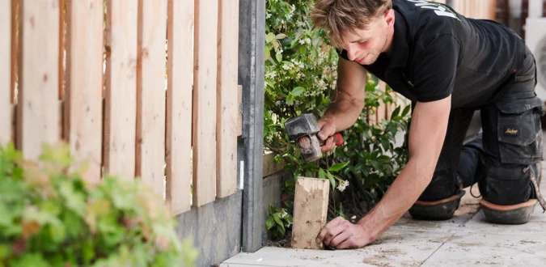
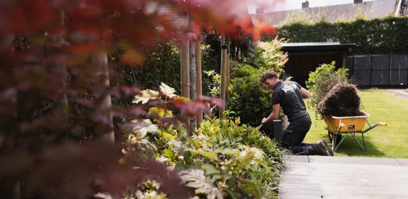
2
Daarna gaan we aan de slag: grondwerk, bestrating, schuttingen, overkappingen en beplanting. Elk detail wordt zorgvuldig aangelegd, zodat u er jaren plezier van heeft.
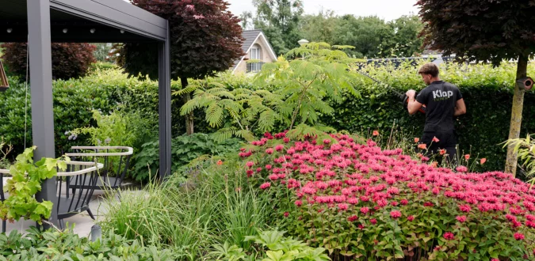
3
Een goed onderhouden tuin vraagt regelmatig aandacht. Wekelijks gazon en borders bijhouden, bomen en struiken snoeien of een complete voorjaarsbeurt: wij nemen het van u over, zodat u alleen hoeft te genieten.
Een greep uit het werk in Doetinchem en omgeving. Laat u inspireren.
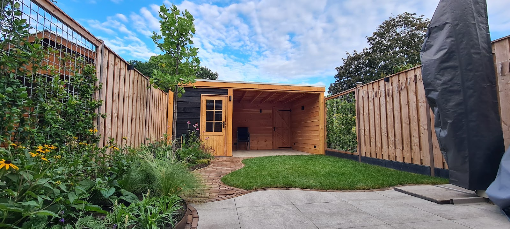
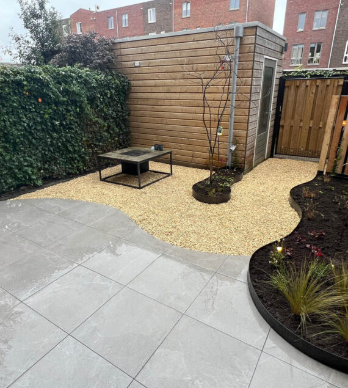
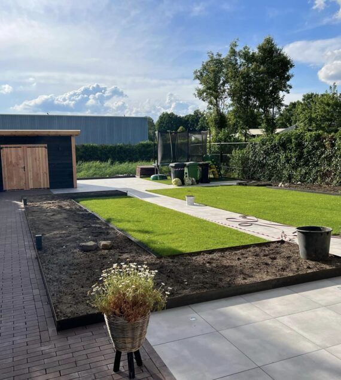
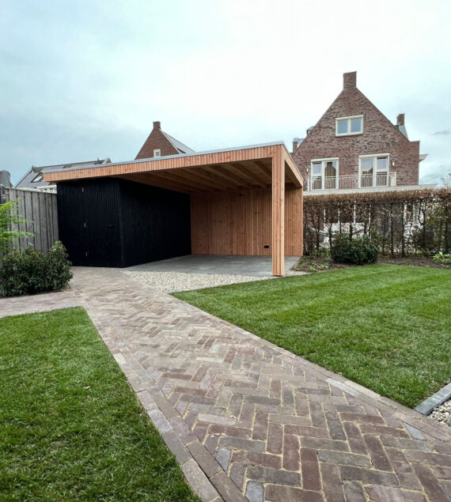
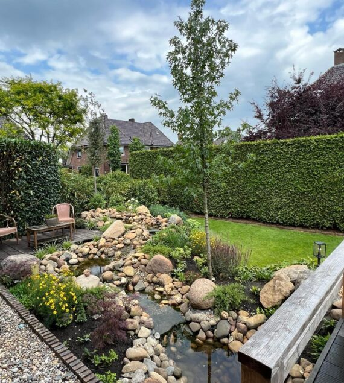
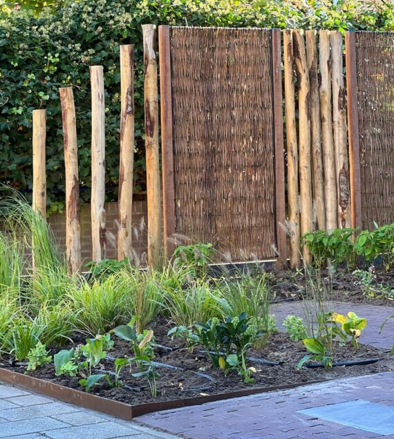
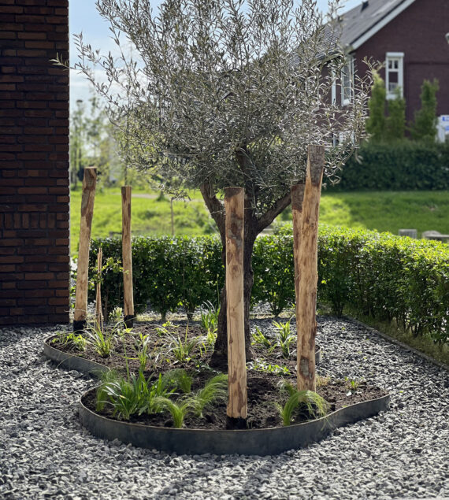
4,9uit 23 reviews
op Google
"Ben zeer tevreden over de samenwerking met Mathijs. Harde werker Die weet waarover hij praat. Zal hem hoogstwaarschijnlijk weer inhuren voor andere tuinklussen."
"Op inschrijving heeft Mathijs Klap twee bomen bij mij gesnoeid voor een zeer concurrerende prijs. Het afgeleverde werk maar zeker ook de enthousiaste inzet van deze jonge ondernemer zijn voor mij aanleiding om Mathijs vaker in te zetten bij onderhoudswerk in mijn tuin."
"Prima werk geleverd met het plaatsen van de schutting. Netjes geplaatst en aan elk detail wordt gedacht. Zal Mathijs bij andere klussen zeker weer inhuren"
"Het was erg plezierig om met Mathijs samen te werken. Hij had goede oplossingen voor al onze vragen en wensen. Een jonge en professionele ondernemer waar we graag mee samengewerkt hebben."
"Met onze ideeën en de tips en ervaring van Mathijs hebben wij een mooi resultaat. Communicatie verliep vlot en soepel. Hield ons goed op de hoogte, komt afspraken na. Kort gezegd; zeer tevreden."
Neem vrijblijvend contact op, dan bespreken we samen de mogelijkheden. Bellen gaat het snelst.
06 31291400 info@klaptuinen.nlKapoeniestraat 19-02
7001 CB Doetinchem